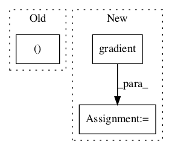

16a31e2c9fedc654e9117b42b8144adf1d0e4900,examples/reinforcement_learning/tutorial_TRPO.py,TRPO,update,#TRPO#,633
Before Change
if j == BACKTRACK_ITERS - 1:
// Line search failed! Keeping old params.
kl , pi_l_new = set_and_eval(step=0.)
// Value function updates
for _ in range(TRAIN_V_ITERS):After Change
:return: None
states, actions, adv, rewards_to_go, logp_old_ph, old_mu, old_log_std = self.buf.get()
g, pi_l_old = self.gradient(states, actions, adv, logp_old_ph)
Hx = lambda x: self.hvp(states, old_mu, old_log_std, x)
x = self.cg(Hx, g)
In pattern: SUPERPATTERN
Frequency: 3
Non-data size: 3
Instances Project Name: tensorlayer/tensorlayer
Commit Name: 16a31e2c9fedc654e9117b42b8144adf1d0e4900
Time:
Author: null
File Name: examples/reinforcement_learning/tutorial_TRPO.py
Class Name: TRPO
Method Name: update
Project Name: tensorlayer/tensorlayer
Commit Name: 641a28fbf0daff0ad1ad0f43d2c4b545cb6f9656
Time:
Author: null
File Name: examples/reinforcement_learning/tutorial_cartpole_ac.py
Class Name: Critic
Method Name: learn
Project Name: tensorlayer/tensorlayer
Commit Name: 641a28fbf0daff0ad1ad0f43d2c4b545cb6f9656
Time:
Author: null
File Name: examples/reinforcement_learning/tutorial_cartpole_ac.py
Class Name: Actor
Method Name: learn